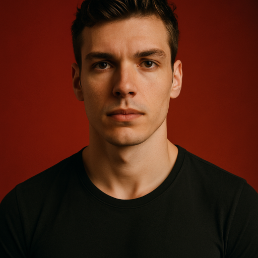

Dhiaeddine Ben Abdsslem

Junior Frontend Developer
State Monastir
Zipcode 5070
County Tunisia
Skills
HTML, CSS, Python, C++, Unreal Engine, Adobe videographie and photographie
software presentation, and more.
Education
ISET, Av. Hadj Ali Soua, Ksar Hellal 5070 - Textile Engineering
September 2023 to Juin 2026
- Top of the college in year 1
- Top of my speciality year 2
- Got a job offer when doing an intership
Experience
SITEX, Rue du Congo Sousse 4000 - Technicien
- Machine maintenance
- Optimisation of the work process
- Worked at the lab
Full grasp of the spinning process,
Knowing all of the machines used
in a lab
KANA PRODUCTION, Siège social à Moknine - Technicien
- Full grasp of the weaving process
- Weaving machines maintenance
- Worked as a responsable for a team to create a new fabric
Expert in textile weaving & knitting
Innovative fabric texture
development
Ensuring high-quality fabric inspection
Across the internet
LinkedIn
GitHub
Instagram